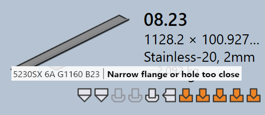

Stato attrezzaggio
In TruSmartCAM, ogni riquadro del pezzo indica visivamente lo stato dell’attrezzaggio di quel pezzo per tutte le macchine disponibili. Ciò aiuta gli utenti a vedere rapidamente per quali macchine un pezzo è attrezzato e se l’attrezzaggio è pronto, richiede revisione o è mancante.
-
Lo stato dell’attrezzaggio è mostrato direttamente sul riquadro del pezzo utilizzando icone e indicatori di colore.
-
Ogni icona rappresenta una tecnologia di macchina (ad es., Punzonatura, Laser).
-
Il colore dell’icona indica lo stato dell’attrezzaggio corrente per quella macchina.
La tabella seguente spiega il significato di ogni icona e colore, aiutando gli utenti a interpretare accuratamente lo stato dell’attrezzaggio.

| Icona macchina | Descrizione |
|---|---|
|
Macchina da taglio laser |
|
Macchina punzonatrice |
|
Pressa piegatrice |
|
Pannellatrice |
| Stato attrezzaggio | Descrizione |
|---|---|
|
L’attrezzaggio è ok |
|
L’attrezzaggio ha avvisi |
|
L’attrezzaggio ha errori |
|
Attrezzaggio non disponibile |
Errori di attrezzaggio
Un errore CAM (Computer-Aided Manufacturing) si verifica durante la fase di attrezzaggio o preparazione alla produzione. Questi errori si verificano a causa di problemi come collisioni di utensili, attrezzaggio mancante o condizioni di taglio non valide.
Errori di attrezzaggio piegatura
-
Collisioni rilevate e Errore pinze : La configurazione di piegatura causa collisioni di utensili o pinze durante la simulazione.


-
Errore da sovraccarico e Flangia stretta o foro troppo vicino : Gli utensili di piegatura sono sovraccaricati oppure i fori sono posizionati troppo vicino alla linea di piegatura, il che potrebbe danneggiare il pezzo o gli utensili.

-
Necessita di revisione e Lunghezza corta del punzone/matrice : La configurazione dell’attrezzaggio necessita di ispezione manuale oppure l’apertura del punzone/matrice selezionata è più piccola del necessario per il pezzo.


-
Attrezzaggio non assegnato, Registro posteriore incompleto o Part too big for this machine : Gli utensili di piegatura richiesti non sono disponibili, il riscontro posteriore non è configurato correttamente o il pezzo è troppo grande per la macchina selezionata.


Errori di attrezzaggio taglio
-
Condizione di taglio mancanti : La condizione di taglio non è mappata per il materiale grezzo, quindi il taglio non può essere eseguito.

-
Contorni non attrezzati o parzialmente attrezzati : Alcune forme o bordi vengono persi o solo parzialmente coperti durante il processo di attrezzaggio, rendendo il pezzo incompleto per il taglio.